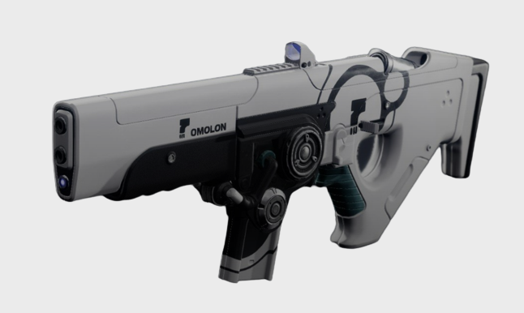

Hung Jury SR4
A Scout Rifle, modified by Dead Orbit's superb technicians and specialists
Price: 6500 Glimmer

A Scout Rifle, modified by Dead Orbit's superb technicians and specialists
Light and nimble, the Hung Jury SR4 is suited every combat situation you will encounter. Long range or close quarters, it will take care of your problems. The technicians at Dead Orbit have included three different sights for different combat situations.
The specialists at Dead Orbit have removed up to 20% of the original weight resulting in a lighter weapon which is quicker to draw and more comfortble to hold.
Energy infused bullets help with armor piercing and damage. You can also reach targets that are further away than usual.